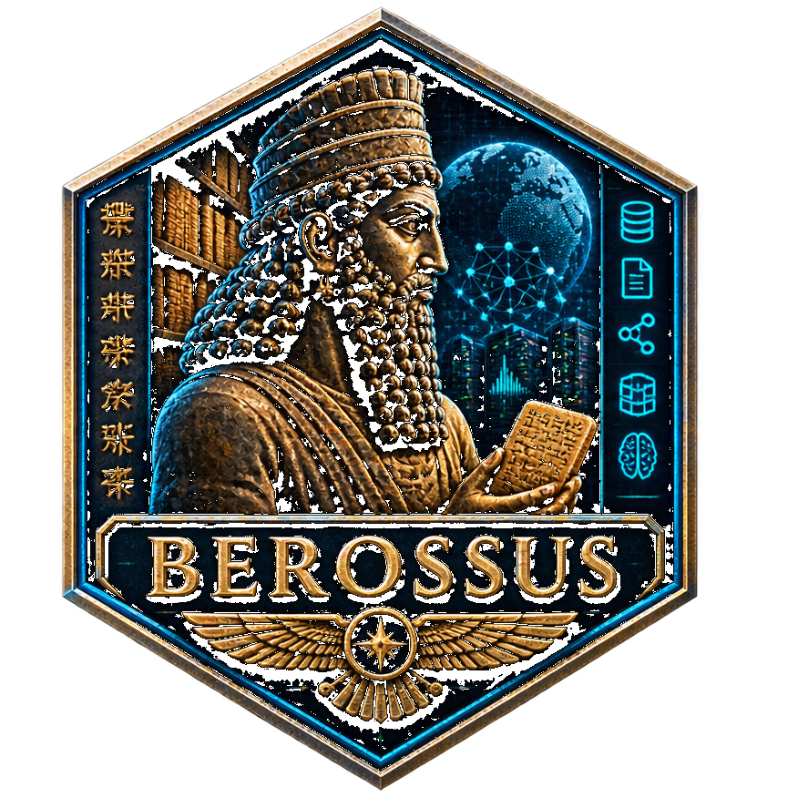

PROJECT
Berossus
Domain-corpus ingestion, deduplication, chunking, vector retrieval, evaluation, and controlled dataset export.

ZZX-LABS R&D // SOFTWARE // WEB MIRROR
Corpus-building and retrieval pipelines for domain-specific LLM tooling with ingestion, deduplication, chunking, local vectorization, retrieval, dataset export, and evaluation.
CORPUS + RETRIEVAL PIPELINE
DOCUMENT INGESTION
Add local TXT, Markdown, JSON, CSV, or pasted text to the corpus.
Text-oriented files are read locally.
CONTROLLED CORPUS PREPARATION
Rebuild chunks with configurable character windows and exact SHA-256 deduplication.
| ID | Document | Characters | Hash |
|---|
LOCAL RETRIEVAL
Search the chunk index using hashed-vector cosine similarity plus lexical scoring.
RETRIEVAL EVALUATION
Define query/expected-document pairs and calculate hit@k and reciprocal rank.
CONTROLLED DATASET OUTPUT
Export deduplicated chunks as JSONL records suitable for downstream curation, retrieval, or controlled fine-tuning pipelines.
PORTABLE WORKSPACE
Export or import the full local corpus, chunk settings, and retrieval index metadata.
PROJECT
Domain-corpus ingestion, deduplication, chunking, vector retrieval, evaluation, and controlled dataset export.
BROWSER VECTOR MODEL
The web edition provides a real local retrieval index without downloading a model. It uses signed hashed token features and cosine similarity; native SentenceTransformers/FAISS remains the semantic-embedding path.